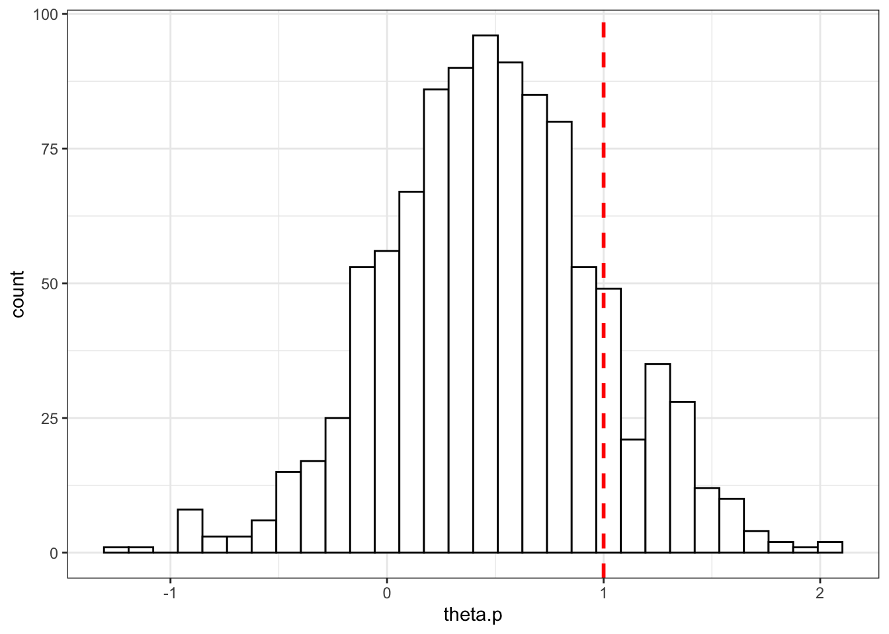

The aggregate consequences of publishing only statistically significant treatment effects
This article is in process You can fork it and propose new writing and simulations by following the steps here You can leave a comment on what you think should be addressed here
There is ample debate recently around the use of p-values and test statistics in science. On the one hand, some argue that only statistically significant results are interesting while others suggest that p-values bias scientific results and that every result should be published. In this paper, I want to put some flesh into this debate by comparing the consequences of using test statistics and p-values to filter scientific results with the practice of publishing all results for a decision-maker faced with the problem of deciding which projects to scale up.
The problem
A decision maker has a portfolio a feasible projects that she can implement at scale. Each project \(p\) provides a return \(\theta^p\). For simplicity, \(\theta^p\) is distributed normally with mean \(\bar{\theta}\) and variance \(\bar{\sigma}^2\). Each project costs \(C\) in order to be implemented at scale.
The decision maker has access to a set of results from \(J\) RCTs run for each project \(p\). Each RCT reports on an estimate \(\hat{\theta}^p_j\) for \(\theta^p\), which has a variance of \(\sigma^2\).
I am going to compare two decision rules for the moment:
- Aggregate all \(J\) results into an average \(\hat{\theta}^p_J\) and implement the programs for which \(\hat{\theta}^p_J>C\).
- Aggregate only the results that are statistically significant into an average \(\hat{\theta}^p_{J^S}\) and implement the programs for which \(\hat{\theta}^p_{J^S}>C\).
In the future, I plan to model two additional decision procedures:
- Proportion of statistically significant results
- Sophisticated/Bayesian decision maker correcting and not correcting for publication bias
For each scenario, I’m comparing the total value of the outcome reached: each implemented project brings \(\theta^p-C\) while each non implemented project brings \(C\).
Simulations
In this section, I’m parameterizing the problem in order to provide a simple illustration. Let’s choose the parameter values first:
theta.bar <- 0.5
sigma.bar <- 0.5
C <- 1
sigma <- 0.5
Np <- 1000
J <- 10Let’s illustrate now the distribution of possible project returns with the red dotted line showing \(C\), the threshold over which a project is profitable:
set.seed(1234)
theta.p <- rnorm(Np,theta.bar,sigma.bar)
data <- as.data.frame(theta.p)
ggplot(data, aes(x=theta.p)) +
geom_histogram(colour="black", fill="white") +
geom_vline(aes(xintercept=C),color="red", linetype="dashed", size=1)+
theme_bw()
Let’s now draw \(J\) samples for each of these projects.
draw.samples <- function(seed,J,data,sigma){
set.seed(seed)
return(rnorm(J,data[seed,1],sigma))
}
test <- draw.samples(2,J,data,sigma)
samples <- lapply(1:Np,draw.samples,J=J,data=data,sigma=sigma)
samples <- data.frame(unlist(samples))
samples$p <- unlist(lapply(1:Np,rep,times=J))
samples$theta.p <- unlist(lapply(theta.p,rep,times=J))
samples$id <- 1:(Np*J)
colnames(samples) <- c('theta.jp','p','theta.p','id')Before looking at the results, let’s first compute the two decisions rules: the average outcome of all estimates for each program and the average of the significant treatment effects (the ones with a t-stat larger than 1.96, according to the usual aproach):
means.samples <- samples %>%
group_by(p) %>%
summarise(theta.p.hat = mean(theta.jp))
samples <- merge(samples,means.samples,by='p')
samples <- samples %>%
mutate(test = theta.jp/sigma) %>%
mutate(theta.jp.s = theta.jp) %>%
mutate(theta.jp.s = ifelse(test<1.96,0,theta.jp.s))
means.samples.s <- samples %>%
group_by(p) %>%
filter(theta.jp.s>0) %>%
summarise(theta.p.hat.s = mean(theta.jp.s))
samples <- merge(samples,means.samples.s,by='p',all.x = TRUE)
samples[is.na(samples)] <- 0Let’s see what it looks like for the first three programs:
ggplot(filter(samples,p<=3), aes(x=as.factor(id), y=theta.jp,fill=as.factor(p))) +
geom_bar(position=position_dodge(), stat="identity") +
geom_errorbar(aes(ymin=theta.jp-1.96*sigma, ymax=theta.jp+1.96*sigma), width=.2,position=position_dodge(.9))+
geom_hline(aes(yintercept=theta.p, colour=as.factor(p)), linetype="solid")+
geom_hline(aes(yintercept=theta.p.hat, colour=as.factor(p)), linetype="dashed")+
geom_hline(aes(yintercept=theta.p.hat.s, colour=as.factor(p)), linetype="dotted")+
theme_bw()+
xlab('RCTs')+
ylab('estimates')+
scale_fill_discrete(name="Programs")+
scale_colour_discrete(name="Programs")+
scale_linetype_manual(name="Estimates",
values=c('solid','dashed','dotted'),
labels=c('Theta.p','Theta.p.hat','Theta.p.hat.s'))
On the plot, the solid lines give the true effect of the program while the dashed lines give the estimate of the effet of the program obtained by aggregating ALL the individual estimates and the dotted lines give the estimates of the effect of the program obtained by aggregating only the statistically significant effects.
Results
As appears clearly on the plot, aggregating only statistically significant results blurs the decision: program 2 appears more effective than program 3, whereas the reverse is actually true, and both programs get implemented, whereas only program 3 should be (it is the only one to have true returns above \(C=1\)).